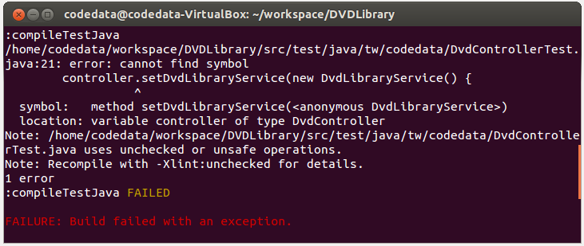

在瞭解如何使用 JUnit 之後，接著來試著重新做一次 Java Tutorial 第五堂（1） 中的練習，由於時間有限，我們僅將重點放在
DvdController 的測試與重構。
練習 16：為 DvdController 建立測試
在 Lab 檔案的 exercises/exercise16 中有個 DVDLibrary 目錄，已經事先將練習 14 與練習 15 中一些可重用的程式碼（像是 Dvd.java、DvdDao.java、DvdLibraryService.java 等）與設定檔（像是 build.gradle 等）準備好，不過，
DvdController 仍是使用 DvdDao 程式碼，在將程式重構為運用 DvdLibraryService 之前，先來為它寫個測試。
請在 src/test/java/tw/codedata 中建立一個 DvdControllerTest.java，如下撰寫程式碼：
package tw.codedata;
import static org.junit.Assert.*;
import org.junit.*;
import java.util.*;
import org.springframework.ui.Model;
public class DvdControllerTest {
List<Dvd> dvds;
Map attributesOfModel;
DvdController controller;
Model model;
@Before
public void setUp() {
dvds = new ArrayList<>(Arrays.asList(
new Dvd("dvd1", 1, 2, new Director("director1"))));
attributesOfModel = new HashMap();
controller = new DvdController();
controller.setDvdDao(new DvdDao() {
public void saveDvd(Dvd dvd) {
dvds.add(dvd);
}
public List<Dvd> allDvds() {
return dvds;
}
});
model = new Model() {
@Override
public Model addAttribute(String attributeName, Object attributeValue) {
attributesOfModel.put(attributeName, attributeValue);
return this;
}
@Override
public Model addAttribute(Object attributeValue) {
throw new UnsupportedOperationException("Not supported yet.");
}
其他方法實作，可如上撰寫就好，因為用不到 ...
};
}
@Test
public void testList() {
String result = controller.list(model);
assertEquals("list", result);
assertEquals(dvds, attributesOfModel.get("dvds"));
}
@Test
public void testAdd() {
String result = controller.add("dvd1", 1, 2, "director1", model);
Dvd dvd = (Dvd) attributesOfModel.get("dvd");
assertEquals("success", result);
assertEquals(2, dvds.size());
assertEquals("dvd1", dvd.getTitle());
}
}在這邊看到
@Before，在每個 @Test 方法被執行之前，都會先執行一次 @Before 方法，因此可以在被標註的方法中，準備好測試之前必須要有的素材（Fixture）。
testList 方法中要測試 DvdController 的 list 方法，我們需要傳入一個 Model，因此在 @Before 方法中，實作了 Model 介面，我們需要確定 list 方法會傳回 "list"，並且會在 Model 中設置 "dvds" 屬性，設定的物件是 DVD 的清單物件。
注意，無論是
Model 或是 DvdDao，都不是實際上運行時，真正相依的實作物件，而是我們自行撰寫的簡單物件，因為這是在進行單元測試，因此，以我們實作的簡單物件來與其他單元作了隔離，這個簡單物件，只要能夠在設定的條件下回應被測試對象就可以了。
舉例來說，我們用了
ArrayList 來做為假裝的資料庫，用 HashMap 來做為屬性設定的儲存對象。在 testList 與 testAdd 中，除了斷言 DvdController 的方法是否傳回預期的值之外，也用這兩個簡單的 ArrayList 與 HashMap 來斷言副作用輸出是否符合預期。
完成以上程式之後，執行
gradle test 指令，你應該可以看到 "BUILD SUCCESSFUL" 測試成功的結果。
練習 17：重構與測試 DvdController
接下來，可以重構
DvdController 了，不過在實際修改 DvdController 之前，可以先來修改一下 DvdControllerTest，因為基本上就公開操作介面來說，我們將相依於 DvdDao 改為相依於 DvdLibraryService，而對 list 及 add 方法的預期並沒有改變，所以 DvdControllerTest 的修改，應該只涉及測試素材修改的部份 ...
package tw.codedata;
import static org.junit.Assert.*;
import org.junit.*;
import java.util.*;
import org.springframework.ui.Model;
public class DvdControllerTest {
List<Dvd> dvds;
Map attributesOfModel;
DvdController controller;
Model model;
@Before
public void setUp() {
...同前...
controller = new DvdController();
controller.setDvdLibraryService(new DvdLibraryService() {
@Override
public List<Dvd> allDvds() {
return dvds;
}
@Override
public Dvd addDvd(String title, Integer year, Integer duration, String directorName) {
Dvd dvd = new Dvd(title, year, duration, new Director(directorName));
dvds.add(dvd);
return dvd;
}
});
...同前...
}
...同前...
}因為是對
DvdController 做單元測試，不必要用真正的 DvdLibraryService，因而使用了匿名類別繼承 DvdLibraryService，重新實作了 allDvds 與 addDvd 方法，只要讓這兩個方法能回應 DvdController 的呼叫，並能夠讓我們斷言副作用是否符合預期即可。
完成以上程式之後，執行
gradle test 指令，你應該可以看到測試失敗，因為 DvdController 還沒修改，所以現在的 DvdControllerTest 根本無法編譯：

在修改（或撰寫）程式之前，先撰寫測試，這是測試驅動（Test-driven）的概念，這樣，你就能先思考你想要的程式介面或規格。
接下來，你可以如 Java Tutorial 第五堂（1） 中的練習 14 修改
DvdController，然後重新執行 gradle test 指令，這次你應該要能夠看到 "BUILD SUCCESSFUL" 測試成功的結果。